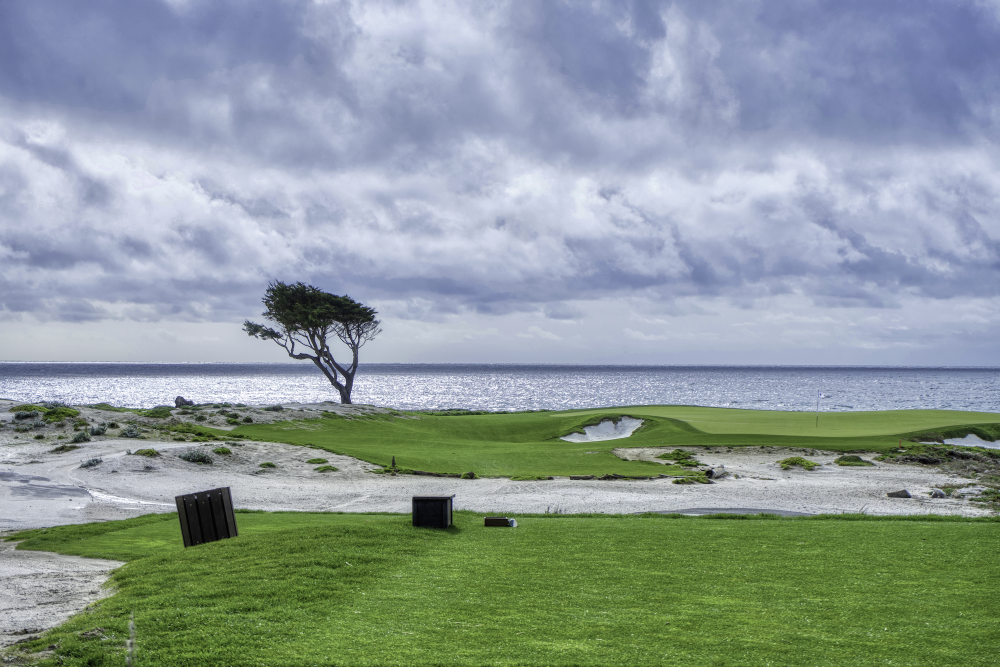
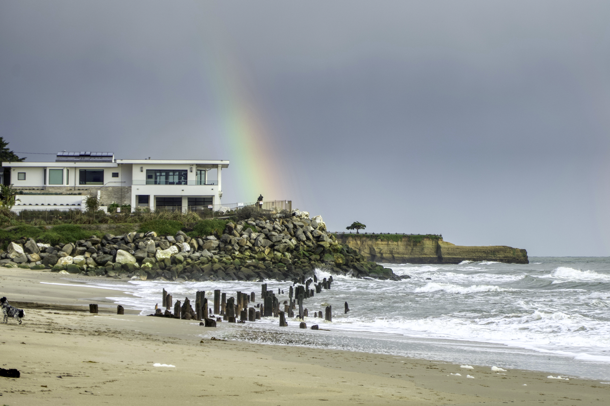

Carmel by the Sea
Carmel by the Sea, California—


I went to the highly anticipated coastal town Carmel by the Sea, and drove the 17-mile scenic drive. It is well while it!
The Spanish Bay

The Lone Cypress
On my way back, I visited Walton Lighthouse in Santa Cruz.
Again, I saw rainbow during my weekend trip!
